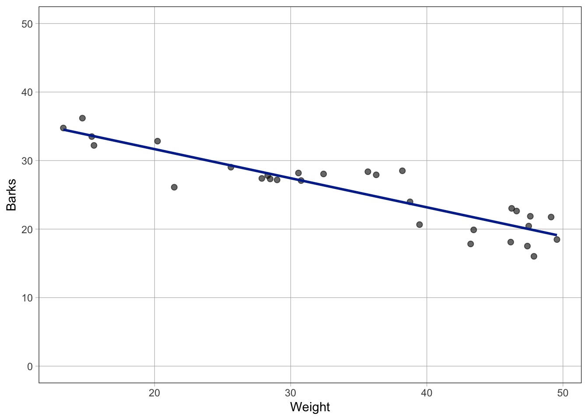
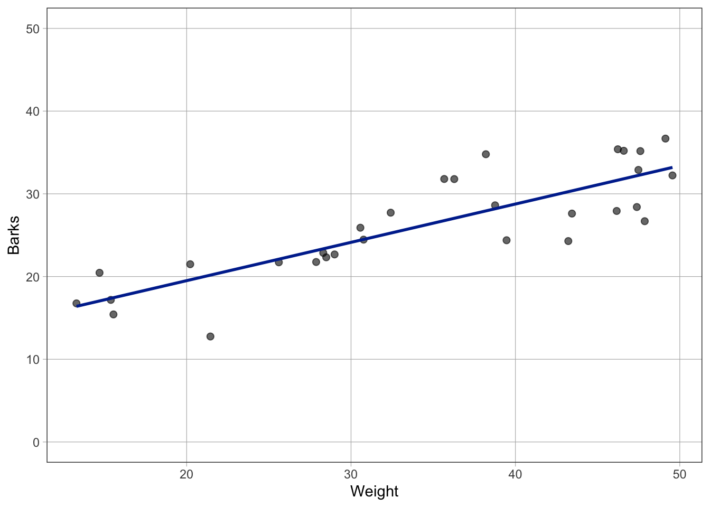
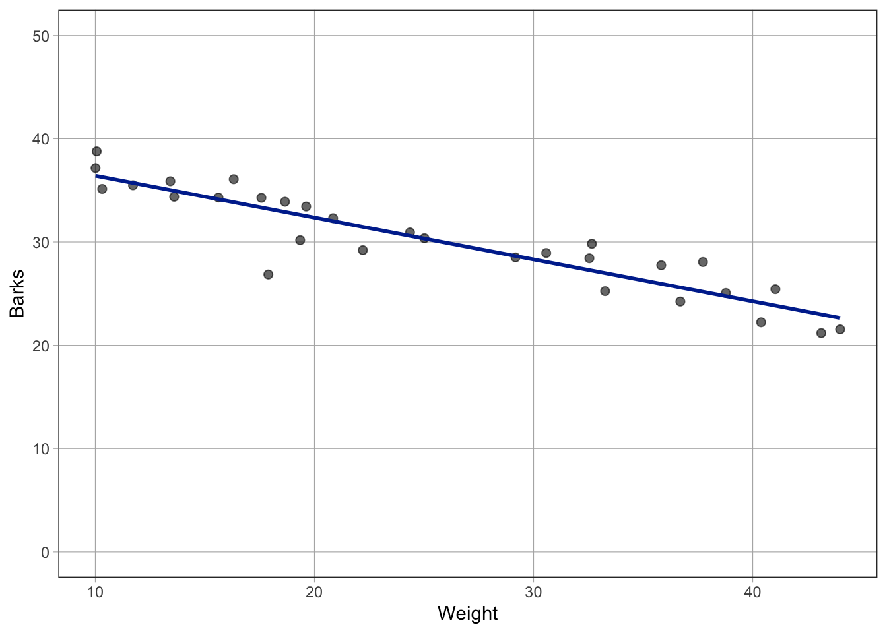
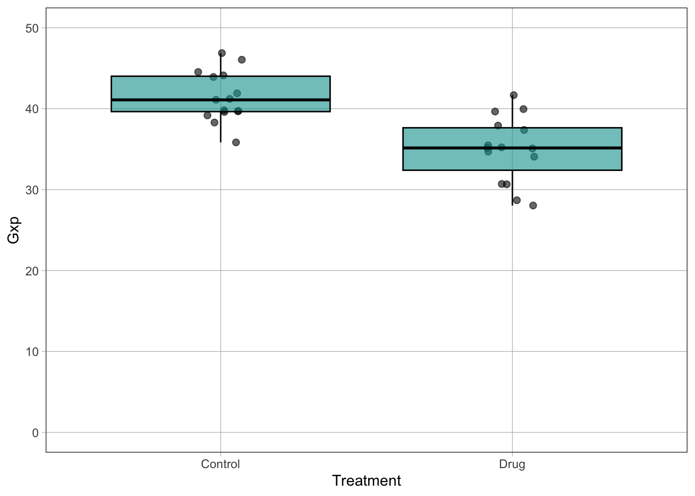
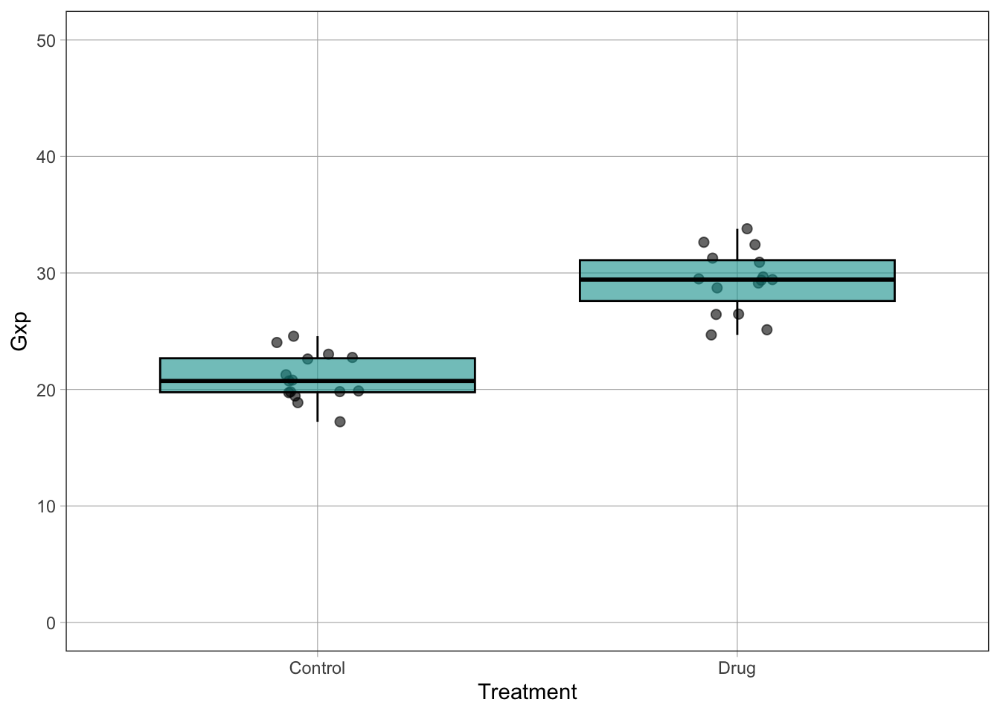
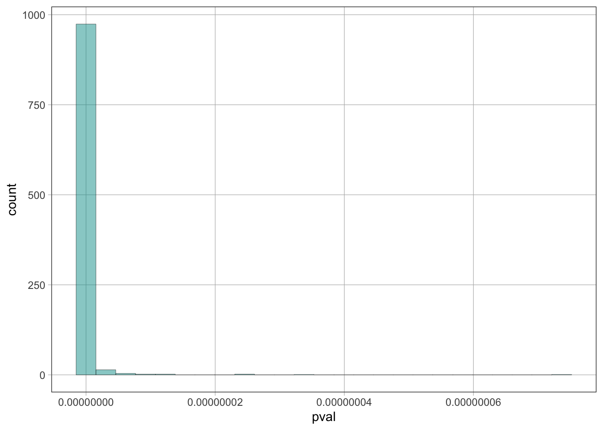
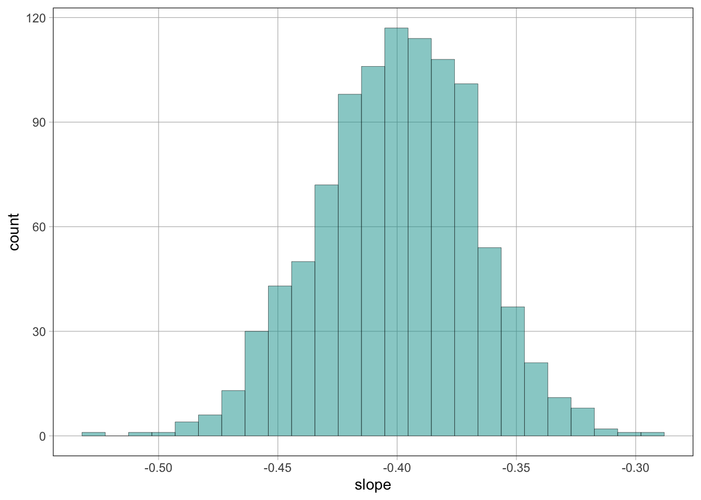
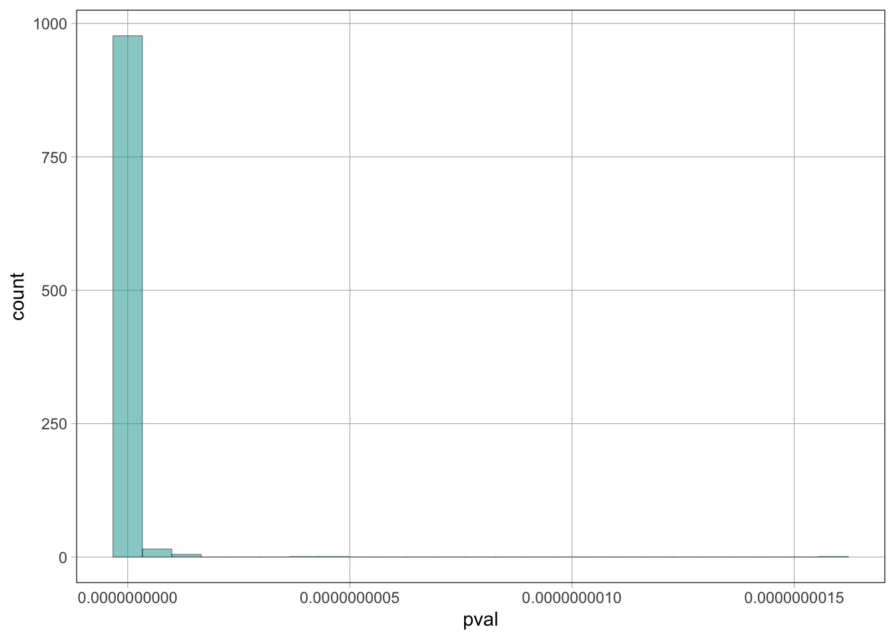
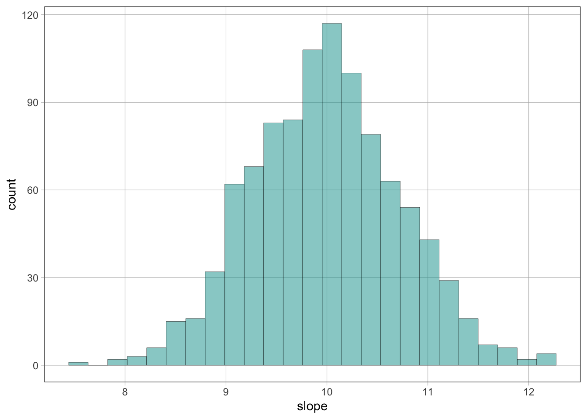

suppressPackageStartupMessages({
library(coursekata)
})Simulate data from linear models
Goals
- Learn how to simulate data from a linear model of the data generating process (DGP)
- See firsthand how well model fitting procedures like
lmrecovers the true values of the model parameters - Explore how p-values and effect sizes are distributed “under the null”
- Explore how sample size (
n) and amount of unexplained variation/error (sd) affect the false positives rate
Why simulate data?
In the previous notebook, we used real data on veery behavior to fit linear models. However, we never truly knew the “real” population parameters.
Simulation lets you:
Specify a linear model with known parameter values as the “true” Data Generating Process (DGP) (a.k.a. the “population”)
Generate (simulate) a data set from this process/population
Fit the simulated data (e.g., using
lm) to see if your estimates are close to the true valuesExperiment with sample size and other parameters to see how it affects your ability to detect meaningful differences, or how easy it is to mistakenly calling a difference to be “statistically significant” when the true effect is zero. When you understand the mechanics of simulating data, you gain deeper insight into why inference algorithms like
lmwork and when they can fail
Getting started
Continuos predictor
Data story
Suppose that the number of barks (Barks) a dog makes is linearly related to its weight (Weight). We propose a simple model:
Barks = β0 + β1·Weight + ϵ
β0is the intercept, representing the hypothetical number of barks when a dog’s weight is 0.β1is the slope, indicating the change in the number of barks for each 1-unit increase in weight.ϵrepresents random noise (assumed to be normally distributed) that captures the inherent variability in barking behavior.
Specify model and simulate a single dataset
set.seed(42) # for reproducibility
n <- 30 # sample size
beta0 <- 40 # true intercept
beta1 <- -0.4 # true slope
sd <- 2 # true standard deviation of the error term
# Generate the continuos predictor variable (Weight) values, between 10 and 50 from a uniform distribution
Weight <- runif(n, min = 10, max = 50)
# Generate the response variable (Barks) values using the specified model
Barks <- beta0 + beta1 * Weight + rnorm(n, mean = 0, sd = sd)
# Combine into a data frame
df <- tibble(Weight, Barks)
# Check summary
summary(df) Weight Barks
Min. :13.3 Min. :16.0
1st Qu.:28.0 1st Qu.:20.9
Median :36.0 Median :27.1
Mean :34.6 Mean :25.5
3rd Qu.:46.2 3rd Qu.:28.3
Max. :49.6 Max. :36.2 head(df)# A tibble: 6 × 2
Weight Barks
<dbl> <dbl>
1 46.6 22.6
2 47.5 20.4
3 21.4 26.1
4 43.2 17.8
5 35.7 28.4
6 30.8 27.1Plot the data
gf_point(Barks ~ Weight, data = df) %>% gf_lm() %>% gf_lims(y = c(0, 50))
Fit the linear model to the data
m <- lm(Barks ~ Weight, data = df)
summary(m)
Call:
lm(formula = Barks ~ Weight, data = df)
Residuals:
Min 1Q Median 3Q Max
-4.946 -1.242 -0.071 1.852 4.569
Coefficients:
Estimate Std. Error t value Pr(>|t|)
(Intercept) 40.1589 1.3669 29.4 < 0.0000000000000002 ***
Weight -0.4245 0.0375 -11.3 0.0000000000059 ***
---
Signif. codes: 0 '***' 0.001 '**' 0.01 '*' 0.05 '.' 0.1 ' ' 1
Residual standard error: 2.36 on 28 degrees of freedom
Multiple R-squared: 0.82, Adjusted R-squared: 0.814
F-statistic: 128 on 1 and 28 DF, p-value: 0.00000000000594Categorical predictor
Data story
Suppose that the expression level of a particular gene (Gxp) in cells is influenced by whether the cells are treated with a drug. In this experiment, cells are divided into two groups: one group remains untreated (Control), and the other group is exposed to the drug (Drug). We propose a simple model:
Gxp = β0 + β1·Treatment + ϵ
β0is the intercept, representing the average gene expression level in untreated cells (i.e., whenTreatment = 0/Control)β1is the slope, indicating how much gene expression changes on average when cells are treated with the drugϵrepresents random noise (assumed to be normally distributed) that captures the inherent variability in gene expression measurements
This model allows us to quantify the drug’s impact by comparing the baseline expression in the control group with the altered expression in the treated group (i.e., Treatment = 1/Drug - Treatment = 0/Control).
Specify model and simulate a single dataset
set.seed(42) # for reproducibility
n <- 30 # sample size
beta0 <- 20 # true intercept
beta1 <- 10 # true slope
sd <- 2 # true standard deviation of the error term
# Generate the categorical predictor variable (Treatment) values, equally split between Control and Drug
Treatment <- rep(c("Control", "Drug"), each = floor(n / 2))
# Convert to binary predictor variable: 0 for Control, 1 for Drug
TreatmentBin <- ifelse(Treatment == "Drug", 1, 0)
# Generate the response variable (Gxp) values using the specified model
Gxp <- beta0 + beta1 * TreatmentBin + rnorm(n, mean = 0, sd = sd)
# Combine into a data frame
df <- tibble(Treatment, Gxp)
# Check summary
summary(df) Treatment Gxp
Length:30 Min. :17.2
Class :character 1st Qu.:20.8
Mode :character Median :24.6
Mean :25.1
3rd Qu.:29.4
Max. :33.8 head(df)# A tibble: 6 × 2
Treatment Gxp
<chr> <dbl>
1 Control 22.7
2 Control 18.9
3 Control 20.7
4 Control 21.3
5 Control 20.8
6 Control 19.8Plot the data
gf_jitter(Gxp ~ Treatment, data = df, width = 0.1) %>% gf_boxplot() %>% gf_lims(y = c(0, 50))Fit the linear model to the data
m <- lm(Gxp ~ Treatment, data = df)
summary(m)
Call:
lm(formula = Gxp ~ Treatment, data = df)
Residuals:
Min 1Q Median 3Q Max
-4.62 -1.22 -0.04 1.74 4.49
Coefficients:
Estimate Std. Error t value Pr(>|t|)
(Intercept) 20.968 0.621 33.76 < 0.0000000000000002 ***
TreatmentDrug 8.337 0.878 9.49 0.0000000003 ***
---
Signif. codes: 0 '***' 0.001 '**' 0.01 '*' 0.05 '.' 0.1 ' ' 1
Residual standard error: 2.41 on 28 degrees of freedom
Multiple R-squared: 0.763, Adjusted R-squared: 0.754
F-statistic: 90.1 on 1 and 28 DF, p-value: 0.0000000003Task 1: Manual fitting with continous predictor
Objective
Simulate a dataset using a model with a continuous predictor, then manually adjust the intercept, slope, and error parameters to “fit” the synthetic dataset provided (without being told the true values of the parameters). Finally, compare your manually tuned parameters with the estimates obtained from lm() and the ones used to generate the data.
Instructions
- Simulate the data:
Use a continuous predictor (e.g., Weight) and assume a model of the form:
Barks = β₀ + β₁ ⋅ Weight + ϵ
where β₀ represents the hypothetical number of barks when
Weight = 0, β₁ is the change in barks per unit increase in weight, and ϵ is normally distributed noise.Simulate your dataset.
- Manual parameter fitting:
- Without knowing the true generating parameters, experiment with different values for
beta0,beta1, andsd(error standard deviation) to simulate data that “resemble/match” the observed data. - Plot your manually generated predictions alongside the observed data to visualize the match.
- Without knowing the true generating parameters, experiment with different values for
- Model fitting and comparison:
- Fit the model using
lm(). - Compare your manually tuned parameter values with the estimates produced by
lm()and, when given by your instructor, with the ones used to generate the data.
- Fit the model using
Observed data
csv_data <- 'Weight,Barks
46.5922417398542,35.2039720641373
47.4830165319145,32.888749501709
21.4455813914537,12.7534244330125
43.217905042693,24.28755173562
35.6698207557201,31.7952504150506
30.7638379652053,24.4620032003672
39.4635325856507,24.3878409908853
15.3866638895124,17.1775798774773
36.2796916160733,31.7838699055544
38.202591361478,34.7868760645339
28.3096710499376,22.8634281301502
38.7644900660962,28.6104368847413
47.386889886111,28.4039556874712
20.217152973637,21.4888685513123
28.4917129017413,22.3258718229903
47.6005809102207,35.166640824834
49.129057135433,36.6790405794029
14.6994944661856,20.4550577990026
28.9998832624406,22.6731625049986
32.4133098497987,27.7215202947933
46.1612554918975,27.9296017087287
15.5484067089856,15.4208263293543
49.5556691568345,32.2251117958877
47.8667293023318,26.690741701326
13.2975023239851,16.7571189826693
30.5684713739902,25.9022314875959
25.6081386841834,21.7208974464457
46.2295252364129,35.389252325305
27.8787851240486,21.7592780807946
43.4401703998446,27.6152420666644'
# Create a dataframe using read.csv with the text argument
df.obs <- read.csv(text = csv_data)
# Display the first few rows of the dataframe
head(df.obs) Weight Barks
1 46.59 35.20
2 47.48 32.89
3 21.45 12.75
4 43.22 24.29
5 35.67 31.80
6 30.76 24.46gf_point(Barks ~ Weight, data = df.obs) %>% gf_lm() %>% gf_lims(y = c(0, 50))
Helper function
sim_data.cont <- function(n, beta0, beta1, sd) {
# Generate the continuos predictor variable (Weight) values, between 10 and 50 from a uniform distribution
Weight <- runif(n, min = 10, max = 50)
# Generate the response variable (Barks) values using the specified model
Barks <- beta0 + beta1 * Weight + rnorm(n, mean = 0, sd = sd)
# Combine into a data frame
df <- tibble(Weight, Barks)
return(df)
}Example
df.sim <- sim_data.cont(n = 30, beta0 = 40, beta1 = -0.4, sd = 2)
gf_point(Barks ~ Weight, data = df.sim) %>% gf_lm() %>% gf_lims(y = c(0, 50))
Task 2: Manual fitting with categorical predictor
Objective
Simulate a dataset using a model with a categorical predictor, then manually adjust the intercept, slope, and error parameters to “fit” the synthetic dataset provided (without being told the true values of the parameters). Finally, compare your manually tuned parameters with the estimates obtained from lm() and the ones used to generate the data.
Instructions
- Simulate the data:
Use a categorical predictor (e.g.,
Treatmentwith levelsControlandDrug).Assume a model of the form:
Gxp = β₀ + β₁ ⋅ Drug + ϵ
where β₀ is the baseline gene expression level in untreated cells, β₁ is the effect of the drug treatment, and ϵ is normally distributed noise.
Simulate your dataset.
- Manual parameter fitting:
- Without knowing the true generating parameters, experiment with different values for
beta0,beta1, andsd(error standard deviation) to simulate data that “resemble/match” the observed data. - Plot your manually generated predictions alongside the observed data to visualize the match.
- Without knowing the true generating parameters, experiment with different values for
- Model fitting and comparison:
- Fit the model using
lm(). - Compare your manually tuned parameter values with the estimates produced by
lm()and, when given by your instructor, with the ones used to generate the data.
- Fit the model using
Observed data
csv_data <- 'Treatment,Gxp
Control,44.11287534144
Control,38.3059054858117
Control,41.089385234012
Control,41.8985878148831
Control,41.212804969423
Control,39.6816264517255
Control,44.5345659923168
Control,39.7160228847607
Control,46.0552711416311
Control,39.8118577028427
Control,43.9146089626705
Control,46.8599361781033
Control,35.833417896663
Control,39.1636336995479
Control,39.600035990819
Drug,37.9078511942102
Drug,35.1472412357518
Drug,28.0306337372857
Drug,28.6785992142734
Drug,39.9603400371906
Drug,35.0800842177646
Drug,30.65607469806
Drug,35.4842479327211
Drug,39.6440240975178
Drug,41.6855803837949
Drug,34.7085926051814
Drug,35.2281918516932
Drug,30.7105107444157
Drug,37.3802920644938
Drug,34.0800153721196'
# Create a dataframe using read.csv with the text argument
df.obs <- read.csv(text = csv_data)
# Display the first few rows of the dataframe
head(df.obs) Treatment Gxp
1 Control 44.11
2 Control 38.31
3 Control 41.09
4 Control 41.90
5 Control 41.21
6 Control 39.68Helper function
sim_data.cat <- function(n = 30, beta0 = 20, beta1 = 10, sd = 2) {
# Generate the categorical predictor variable (Treatment) values, equally split between Control and Drug
Treatment <- rep(c("Control", "Drug"), each = floor(n / 2))
# Convert to binary predictor variable: 0 for Control, 1 for Drug
TreatmentBin <- ifelse(Treatment == "Drug", 1, 0)
# Generate the response variable (Gxp) values using the specified model
Gxp <- beta0 + beta1 * TreatmentBin + rnorm(n, mean = 0, sd = sd)
return(df)
}gf_jitter(Gxp ~ Treatment, data = df.obs, width = 0.1) %>% gf_boxplot() %>% gf_lims(y = c(0, 50))
Example
df.sim <- sim_data.cat(n = 30, beta0 = 20, beta1 = 10, sd = 2)
gf_jitter(Gxp ~ Treatment, data = df.sim, width = 0.1) %>% gf_boxplot() %>% gf_lims(y = c(0, 50))
Task 3: Simulation of multiple experiments with continuous predictor
Objective
Perform a similar simulation study as in Task 3, but using a model with a continuous predictor. Calculate the false positive rate at α = 0.05.
Instructions
- Simulation setup:
- Use a model with a single continuous predictor (e.g.,
Weight). - Set the true slope (
beta1) to 0, meaning there is no real relationship between the predictor and the response.
- Use a model with a single continuous predictor (e.g.,
- Simulate 1000 datasets:
- Simulate 1000 datasets using your chosen parameters.
- For each dataset, fit a linear model using
lm()and extract the estimated slope and the p-value for the continuous predictor.
- Visualization:
- Plot histograms of the 1000 estimated slopes and the corresponding p-values.
- Analyze the distributions to understand the variability of the estimates under the null hypothesis.
- Calculate the false positive rate:
- Calculate the proportion of simulations where the p-value is less than 0.05. This proportion represents the false positive rate (Type I error rate) under the null hypothesis.
- Extension:
- Repeat the simulation with varying sample sizes, different error variances, or even with a non-zero slope.
- Discuss how these changes affect the distributions of the p-values, estimated slopes, and the false positive rate.
Helper functions
sim_pval.cont <- function(n, beta0, beta1, sd) {
# Generate the continuos predictor variable (Weight) values, between 10 and 50 from a uniform distribution
Weight <- runif(n, min = 10, max = 50)
# Generate the response variable (Barks) values using the specified model
Barks <- beta0 + beta1 * Weight + rnorm(n, mean = 0, sd = sd)
# Fit the linear model
model <- lm(Barks ~ Weight)
# Extract and return the p-value for beta1 (the slope coefficient)
pval <- summary(model)$coefficients[2, 4]
return(c(pval = pval))
}
# Example usage
sim_pval.cont(n = 30, beta0 = 40, beta1 = -0.4, sd = 2) pval
0.00000000000001797 sim_slope.cont <- function(n, beta0, beta1, sd) {
# Generate the continuos predictor variable (Weight) values, between 10 and 50 from a uniform distribution
Weight <- runif(n, min = 10, max = 50)
# Generate the response variable (Barks) values using the specified model
Barks <- beta0 + beta1 * Weight + rnorm(n, mean = 0, sd = sd)
# Fit the linear model
model <- lm(Barks ~ Weight)
# Extract and return the estimated value of beta1 (the slope coefficient)
slope <- summary(model)$coefficients[2, 1]
return(c(slope = slope))
}
# Example usage
sim_slope.cont(n = 30, beta0 = 40, beta1 = -0.4, sd = 2) slope
-0.3506 Example (pvals)
pvals <- do(1000) * sim_pval.cont(n = 30, beta0 = 40, beta1 = -0.4, sd = 2)
head(pvals) pval
1 0.0000000000004457013
2 0.0000000000000001316
3 0.0000000000017606495
4 0.0000000000000018214
5 0.0000000000006116841
6 0.0000000000000037468pvals %>% gf_histogram(~ pval)
Example (slopes)
slopes <- do(1000) * sim_slope.cont(n = 30, beta0 = 40, beta1 = -0.4, sd = 2)
head(slopes) slope
1 -0.4468
2 -0.4014
3 -0.4431
4 -0.3836
5 -0.4228
6 -0.3855slopes %>% gf_histogram(~ slope)
Task 4: Simulation of multiple experiments with categorical predictor
Objective
Investigate the behavior of p-values and estimated slopes when the true effect is zero by simulating multiple datasets with a categorical predictor, and calculate the false positive rate at α = 0.05.
Instructions
- Simulation setup:
- Use a model with a single categorical predictor (e.g.,
Treatmentwith levelsControlandDrug). - Set the true slope (
beta1) to 0, meaning there is no real difference between groups.
- Use a model with a single categorical predictor (e.g.,
- Simulate 1000 datasets:
- Simulate 1000 datasets using your chosen parameters.
- For each dataset, fit a linear model using
lm()and extract the estimated slope and the p-value for the treatment effect.
- Visualization:
- Plot histograms of the 1000 estimated slopes and the corresponding p-values.
- Analyze the distributions to understand the variability of the estimates under the null hypothesis.
- Calculate the false positive rate:
- Compute the proportion of simulations in which the p-value is less than 0.05. This proportion represents the false positive rate (Type I error rate) under the null hypothesis.
- Extension:
- Repeat the simulation with varying sample sizes, different error variances, or even with a non-zero slope.
- Discuss how these changes affect the distributions of the p-values, estimated slopes, and the false positive rate.
Helper functions
sim_pval.cat <- function(n, beta0, beta1, sd) {
# Generate the categorical predictor variable (Treatment) values, equally split between Control and Drug
Treatment <- rep(c("Control", "Drug"), each = floor(n / 2))
# Convert to binary predictor variable: 0 for Control, 1 for Drug
TreatmentBin <- ifelse(Treatment == "Drug", 1, 0)
# Generate the response variable (Gxp) values using the specified model
Gxp <- beta0 + beta1 * TreatmentBin + rnorm(n, mean = 0, sd = sd)
# Fit the linear model
model <- lm(Gxp ~ Treatment)
# Extract and return the p-value for beta1 (the slope coefficient)
pval <- summary(model)$coefficients[2, 4]
return(c(pval = pval))
}
# Example usage
sim_pval.cat(n = 30, beta0 = 20, beta1 = 10, sd = 2) pval
0.000000000000782 sim_slope.cat <- function(n, beta0, beta1, sd) {
# Generate the categorical predictor variable (Treatment) values, equally split between Control and Drug
Treatment <- rep(c("Control", "Drug"), each = floor(n / 2))
# Convert to binary predictor variable: 0 for Control, 1 for Drug
TreatmentBin <- ifelse(Treatment == "Drug", 1, 0)
# Generate the response variable (Gxp) values using the specified model
Gxp <- beta0 + beta1 * TreatmentBin + rnorm(n, mean = 0, sd = sd)
# Fit the linear model
model <- lm(Gxp ~ Treatment)
# Extract and return the estimated value of beta1 (the slope coefficient)
slope <- summary(model)$coefficients[2, 1]
return(c(slope = slope))
}
# Example usage
sim_slope.cat(n = 30, beta0 = 20, beta1 = 10, sd = 2)slope
10.27 Example (pvals)
pvals <- do(1000) * sim_pval.cat(n = 30, beta0 = 20, beta1 = 10, sd = 2)
head(pvals) pval
1 0.000000000000106403
2 0.000000000000012553
3 0.000000000000002582
4 0.000000000000003570
5 0.000000000000205441
6 0.000000000000686293pvals %>% gf_histogram(~ pval)
Example (slopes)
slopes <- do(1000) * sim_slope.cat(n = 30, beta0 = 20, beta1 = 10, sd = 2)
head(slopes) slope
1 11.115
2 10.303
3 9.223
4 10.489
5 9.660
6 9.441slopes %>% gf_histogram(~ slope)